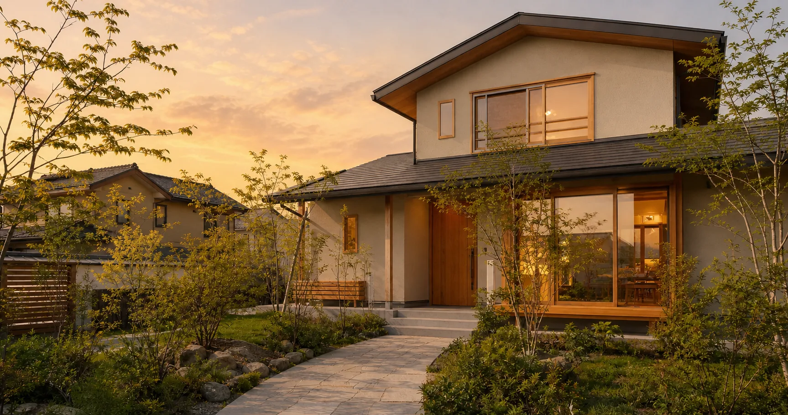

中古住宅を購入する前
購入を決める前に建物を確認し、修繕や改修にどのくらい手がかかりそうかを見ていきます。
ホームインスペクションを見る群馬県の住まい・空き家相談
中古住宅の購入、相続した実家、空き家、リフォーム、売却など。何から始めるか決まっていない段階でも構いません。

ご相談のタイミング
該当する項目が複数あっても構いません。分かる範囲から確認します。
購入を決める前に建物を確認し、修繕や改修にどのくらい手がかかりそうかを見ていきます。
ホームインスペクションを見る内覧会同行や工事中の工程検査について、確認したい時期と内容からご案内します。
新築住宅の検査を見る住む、直す、貸す、売る、解体する。建物の状態を見ながら、どの方法が合うか考えます。
間取り、断熱、耐震、設備、見積内容を確認し、どこから直すかを考えます。
解体を決める前に、現在の状態、再利用の可能性、売却との順番を確認します。
現況のまま売るか、修繕してから売るか、更地にするか。それぞれの違いを確認します。
ご相談で確認すること
必要に応じて専門家や専門業者との連携も検討します。税務、登記、法律上の判断は、それぞれの専門家への確認が必要です。
ご相談の流れ
現在の状況を、分かる範囲でお知らせください。
困っていることと、知りたいことを確認します。
必要な資料、調査の内容、料金をご案内します。
事前に決めた内容に沿って確認します。
分かったことと、次に考えられることをお伝えします。
お問い合わせ
料金が発生する場合は、相談内容を確認して事前にご案内します。